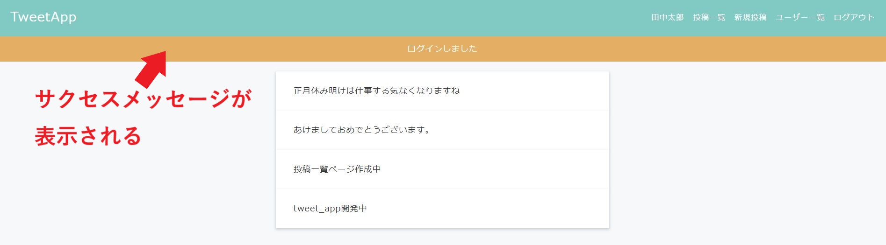

ログイン・ログアウト機能 Ⅰ
制作イメージ
ログイン・ログアウト機能を作成してください。
1. ログイン
1-1. 任意のページ
1-2. ログインページ
1-3-1. 投稿一覧ページ_ログイン成功

1-3-2. ログインページ_ログイン失敗

2. ログアウト
2-1. 任意のページ
2-2. ログインページ
3. 新規ユーザー登録時
3-1. 新規ユーザー登録ページ
3-2. ユーザー詳細ページ
【カラム追加】
◆usersテーブルに下記カラムを追加してください。
・マイグレーションファイル名：add_password_to_users
・カラム名：password
・データ型：string
◆Userモデルにバリデーションを追加し、下記に該当する場合は投稿内容をデータベースに保存せずにエラーメッセージを表示するようにしてください。
・パスワード：空の投稿の場合
【ログイン／ログアウト】
◆ログイン前とログイン後で、画面上の右上のメニューブロックが下記の通り動的に変更されるようにしてください。
・ログイン前 メニューブロック
- TweetApp（リンク先："/"）
- TweetAppとは
- 新規登録
- ログイン
・ログイン後 メニューブロック
- TweetApp（リンク先："/posts/index"）
- ログインユーザー名（リンク先："/users/:id"）
- 投稿一覧
- 新規投稿
- ユーザー一覧
- ログアウト
◆ログイン時にユーザーが存在しない場合は、下記エラーメッセージを自作して表示してください。
・メールアドレスまたはパスワードが間違っています
◆ログイン後は、ログインユーザーの情報をsession（セッション）を使用して保持し続けるようにしてください。
◆サクセスメッセージは、下記の通りにしてください。
・ログイン成功時：ログインしました
・ログアウト時：ログアウトしました
【新規ユーザー登録時】
◆/users/new.html.erbにパスワード用のフォームを作成し、新規ユーザー登録時にパスワードがデータベースに保存されるようにしてください。
◆新規ユーザー登録が成功した直後はログイン状態となるようにしてください。
【その他】
◆HTMLは下記ファイルをベースとして使用してください。
◆URL、コントローラ名、アクション名は下記のルーティング表に従って作成してください。
・HTMLダウンロード
ルーティング表